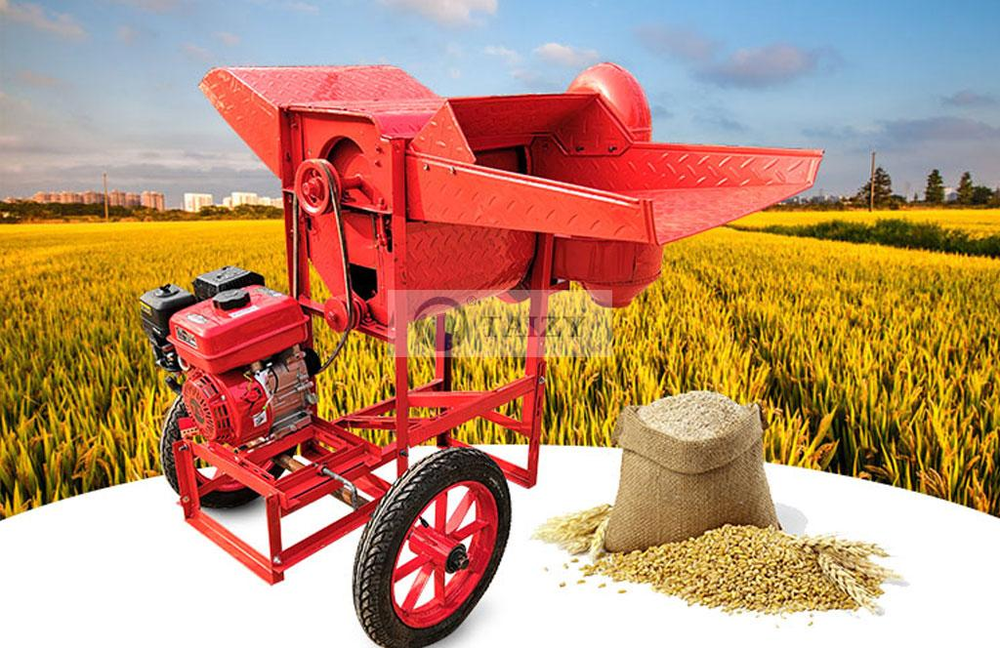
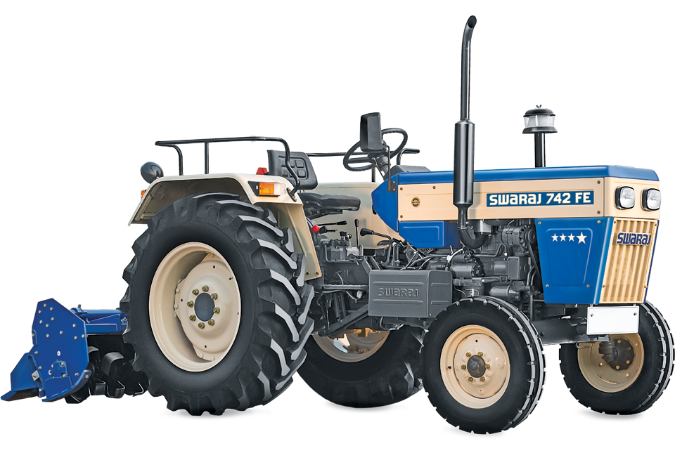

Digital tools in agriculture
Paddy planting machine

Description:
1.With this machine we can easily sow rice in a very short time.
Paddy and wheat threshing machine

Description:
1.In the past, a lot of time was wasted for threshing wheat and paddy. At present it is possible to thresh a lot of paddy and wheat with this machine.
Land preparation machinery

Description:
1.Nowadays, with the help of these digital devices, we can prepare our land in a very short time.It reduces our time wasted.
Land preparation machinery

Description:
1.Nowadays, with the help of these digital devices, we can prepare our land in a very short time.It reduces our time wasted.
Rice harvester

Description:
1.Nowadays, we can harvest our crops with this digital device without much effort. It reduces our time wasted